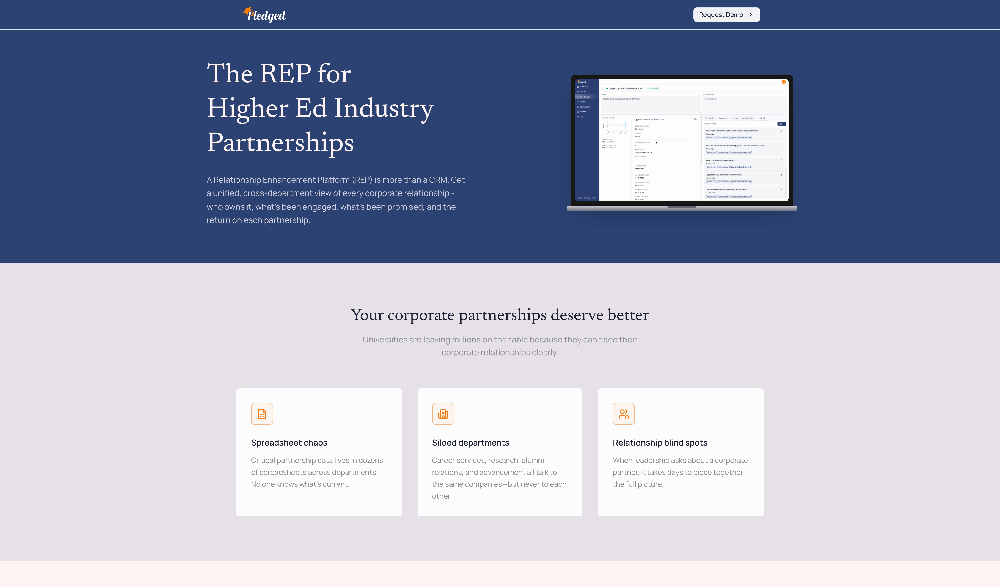
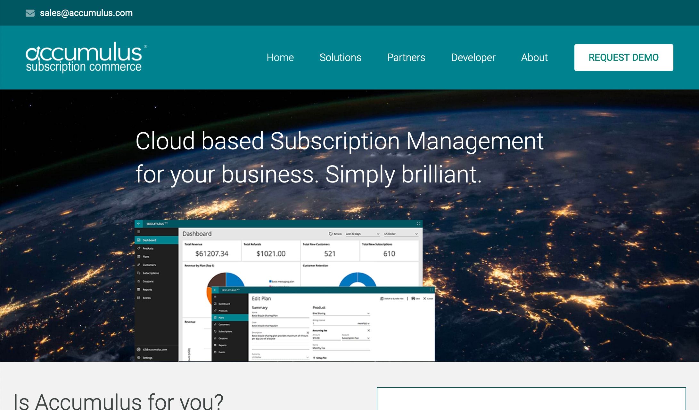
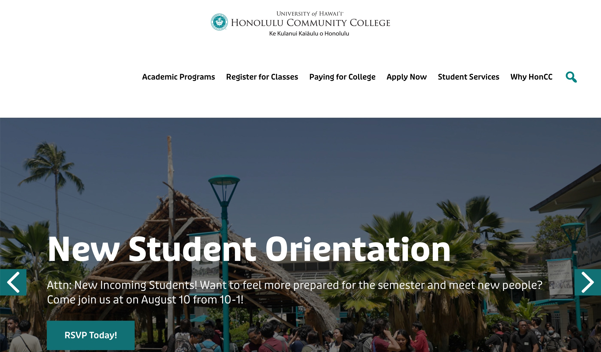
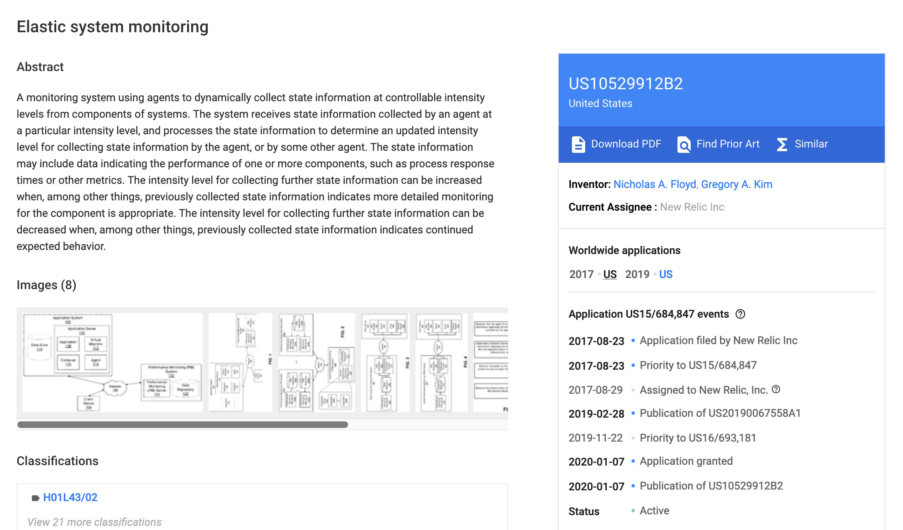

I enjoy designing systems that solve meaningful problems in elegant ways and raising expectations for what
technology can accomplish. Throughout my career, I’ve helped organizations transform ambitious ideas into
reliable, scalable software systems.
As a software architect and engineer with decades of experience, I’ve designed, built, and delivered complex
software systems from concept to production. I’ve created products from the ground up, led the architecture of
enterprise-scale systems, modernized existing platforms, and guided teams through complex technical challenges.
Along the way, I’ve earned a granted U.S. patent and have continually embraced new technologies, including AI, to
help teams build better software more effectively.
My experience as an engineer, architect, product manager, consultant, and executive allows me to balance technical
excellence with business goals, user experience, and long-term maintainability.
I care deeply about craftsmanship. I believe exceptional software comes from curiosity, precision, thoughtful
design, and continuous learning. I strive to leave every system, team, and organization stronger than I found it.
Notable Achievements

Pledged (New System and Company)
Co-founded Pledged and served as Chief Architect for an institutional relationship intelligence platform
built for higher education. Led the technical vision, architecture, and development of the platform from
concept to production.
Architected the overall system, designed the data architecture, and developed the backend services and React
frontend. Established engineering standards, software architecture principles, and development practices to
support a scalable, maintainable platform.
Designed and implemented the company’s cloud architecture across AWS and Azure, established DevOps and CI/CD
practices, and built the engineering foundation needed to support long-term growth.
Championed the adoption of AI-assisted software development throughout the organization, integrating emerging
tools and workflows to improve engineering productivity, software quality, and development velocity.

Accumulus (New System and Company)
Co-founded Accumulus and led the architecture and development of a cloud-native subscription billing and
management platform built on Microsoft Azure. The platform was commercially available at the launch of Azure,
making it one of the early SaaS solutions built on Microsoft’s cloud platform.
Architected the overall system, developed core platform components, and helped build a scalable browser-based
application for subscription management and billing.
Extended the platform to mobile by designing and developing companion credit card processing applications
for iOS and Windows Phone.
Inovaware (New System and Company)
Co-founded Inovaware and co-architected PRISM, an enterprise subscription billing and management platform
deployed in customers’ own data centers. Played a leading role in the architecture and development of the
platform, contributing extensively to its design and implementation.
Developed a rich Windows desktop application that provided a comprehensive interface for managing
subscriptions and business operations.
PRISM was adopted by enterprise customers including Salesforce and j2 Global. At j2 Global, the platform
supported the company’s growth from 13,000 to 13 million customers over a ten-year period while scaling to
meet the demands of a publicly traded NASDAQ business.

GRADVISE (New System)
Designed and developed a graduation advisement system for Honolulu Community College. The software’s success
led to its adoption by every Hawaii community college before being acquired and commercialized by the vendor
providing the statewide student information system.

Elastic system monitoring (Patent)
Co-authored a granted U.S. patent for an adaptive system monitoring methodology that dynamically adjusts
monitoring detail to maximize diagnostic insight while minimizing runtime overhead.